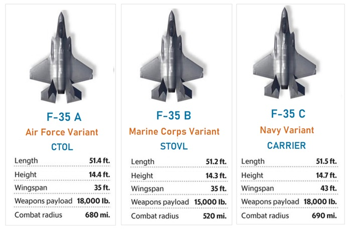

Explore the F-35 Lightning II variants: F-35A, F-35B, and F-35C. Learn about its distinct role and capabilities tailored for different military services.
The F-35 Lightning II, developed by Lockheed Martin, features three distinct models tailored to meet diverse operational needs within the United States military. Each model offers unique capabilities suited for specific mission requirements, ranging from conventional takeoff and landing to carrier-based operations. Below is an overview of the primary models of the F-35, highlighting their roles and primary services.

For the latest F-35 information, please visit the official F-35 Lightning II website.
| VARIANT | SERVICE | ROLE |
|---|---|---|
| F-35A | USAF | Conventional Air Force Multirole Fighter |
| F-35B | USMC | Close Air Support (STOVL) |
| F-35C | USN | Carrier-based operations |